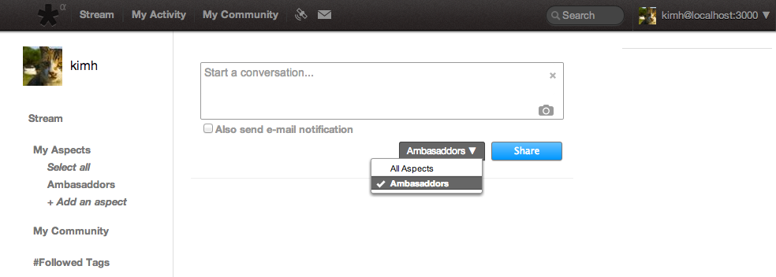
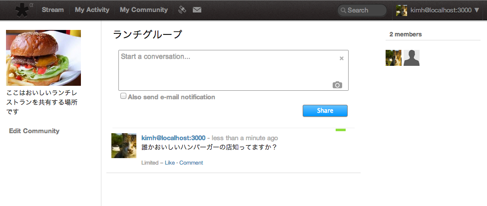
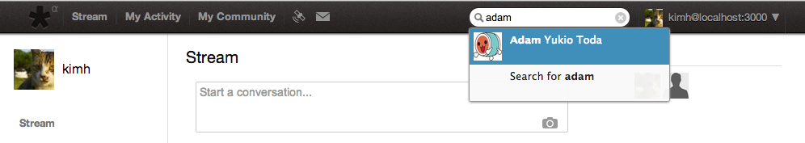

Blanco: KVH SNS
The only place where you can share KVH things
Created by Kim, Hirokuni
Supported by KVH Ambasaddor
What is Blanco?
Blanco is SNS only for KVH employees.
You can think of Blanco as private Facebook or Google+
Why did we make Blanco?
- KVH Ambassador 2011 wanted casual communication tool
- Public SNS's are not suitable for internal use
- E-mail is not interactive
So, I decided to write by my own
Almost two years have passed since then...
This is the third time for me as as member of Ambassador...
Now I feel a bit older...
Finally, Blanco is raedy to go!!
You post is only visible to people in the aspect

You can see who is in the coversation

Many other useful features
Easy look up of employee profile

Use cases
-
News sharing
-
Sending "Welcome aboard" message to new comers
-
Announcing Ambassador's events with nice posters
-
Providing interactive communication place with Executives
-
Finding today's lunch (drink) mate
And many other usages with new features because....
I can keep working on Blanco